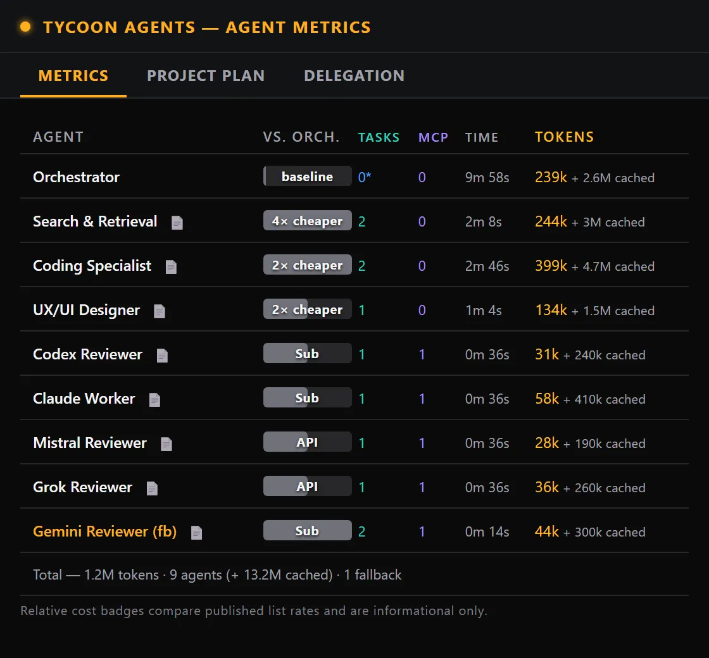
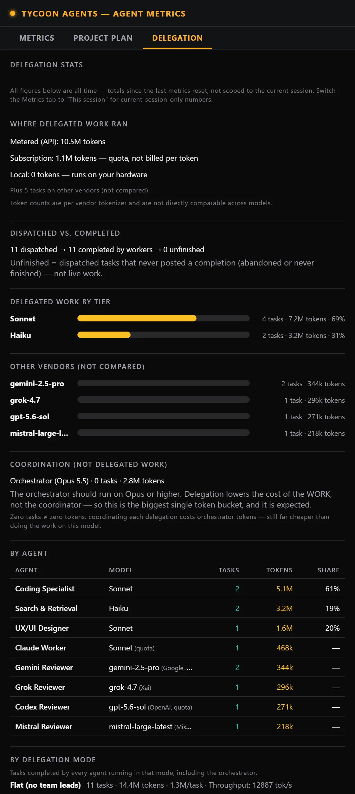

TycoonAgents Handbook / Chapter 11 / Part III · Reference
Reading the numbers
The Metrics tab tells you what each agent actually did; the Delegation tab tells you whether delegating was worth it. Neither is trying to give you a precise dollar figure — both are built around relative comparisons, so you can trust the shape of the story even without an exact cost model.

| Column | What it shows |
|---|---|
| Agent | The agent or orchestrator this row summarizes. |
| Model | Which model that agent is running on. |
| Tasks | Completed task count. The orchestrator's row is marked with an asterisk (*) and shows its own completed tasks — hover it to see the delegated count too. |
| Tokens | Total tokens consumed by that agent. |
| vs. orch. | A bar showing tasks completed relative to the busiest agent, plus a badge like "3x cheaper" or "2x pricier" derived from the model's price ratio to the orchestrator's model. |

Savings headline. A line like "Delegating avoided ~N% of the cost of running it all on the orchestrator's model" — scoped only to the work that was actually delegated, not the orchestrator's own coordination overhead.
Dispatched vs. completed. A reconciliation line comparing tasks the orchestrator dispatched against tasks that posted a completion. The gap is labeled "unfinished" — dispatched tasks that never reported back, whether abandoned or simply not yet done. It does not mean something is currently running.
Delegated work by tier. A breakdown of delegated work grouped by model tier.
Coordination (orchestrator). Shown as its own separate bucket — the orchestrator is expected to be the biggest single token consumer, since it's coordinating everything else.
Per-agent table. The same agents from the Metrics tab, viewed through the delegation-savings lens.
Zero tasks ≠ zero tokens. A caption under the Coordination line notes that coordinating each delegation still costs orchestrator tokens even when the orchestrator completes no tasks of its own — still far cheaper than doing the work on that model.
Warn
If delegation looks like it isn't working, the Coordination line is the fastest check: a high orchestrator task count next to few completed agent tasks usually means an agent's instructions aren't routing work to a specialist — worth a look at Keyword routing in Settings (Chapter 10).
Both tabs share a Reset metrics button, which clears the counters for a fresh session without touching your themes or plan state.